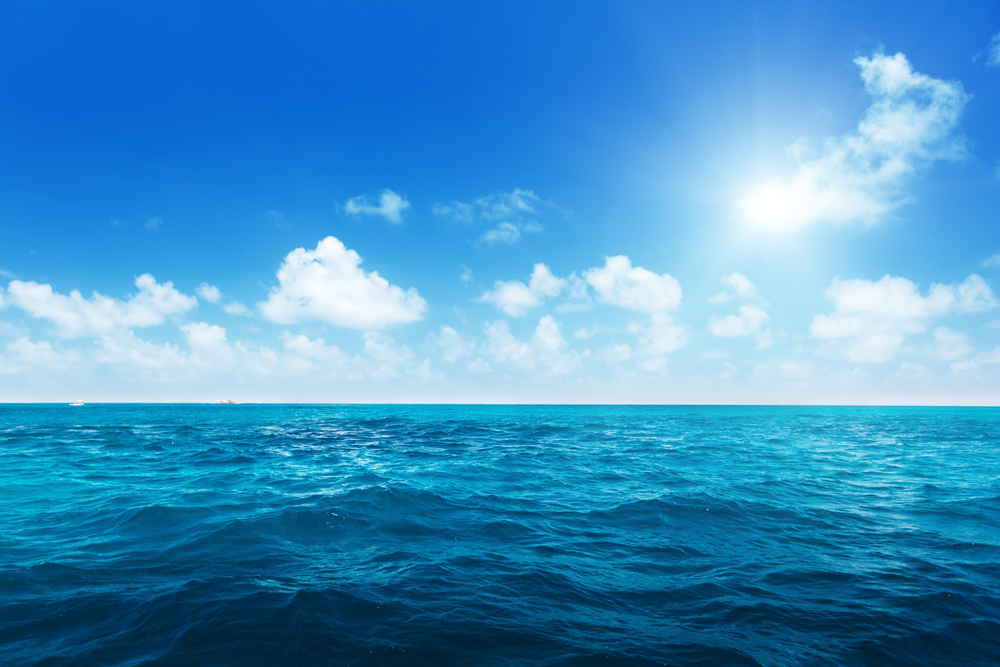
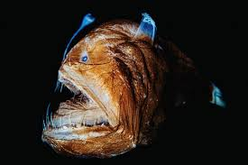
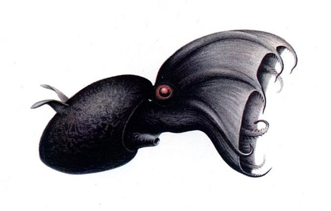
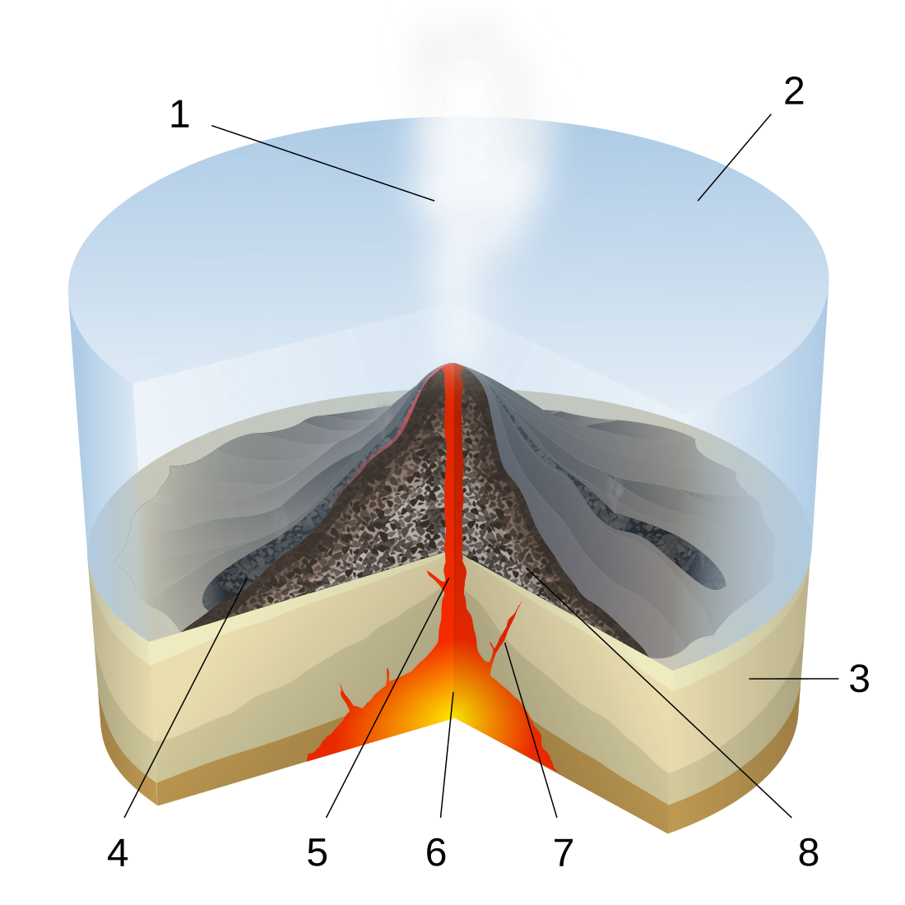
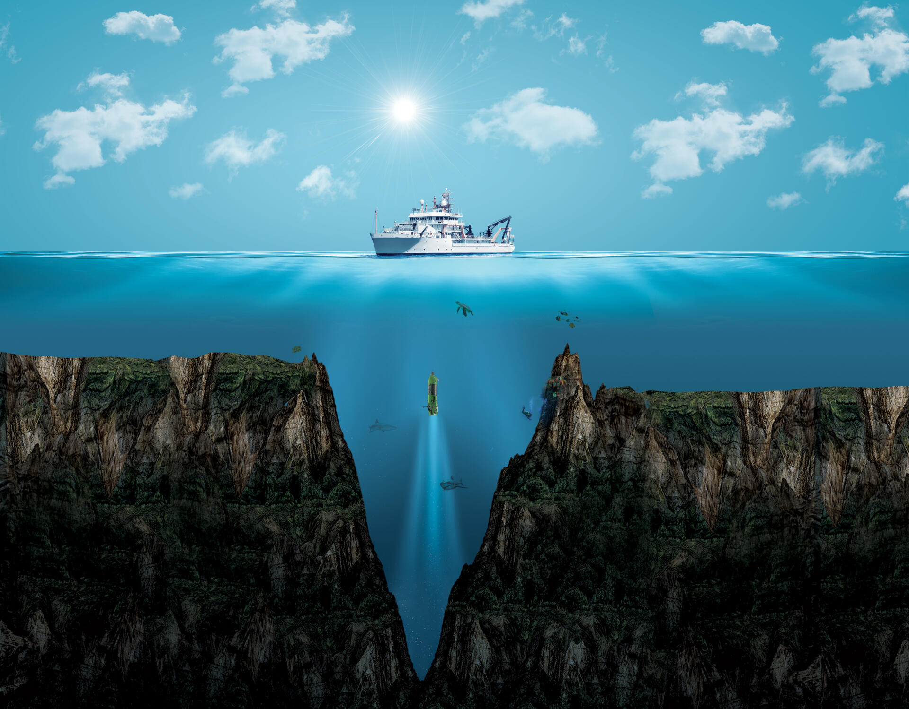
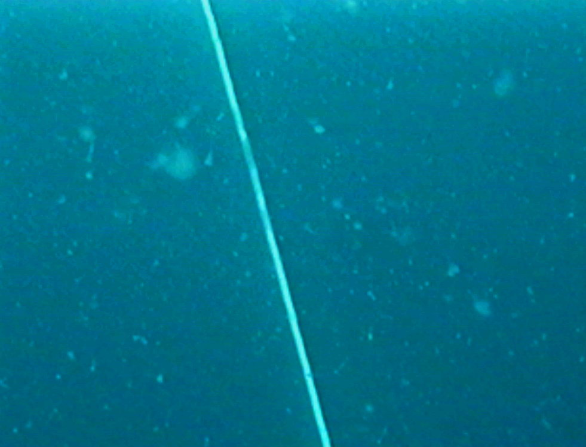

Zelo Zanimive Zanimivosti Zanimivega Morja
Za morja in globoke oceane obstaja veliko zanimivosti, kot so:
1.Večina oceanov je neraziskana
Znanstveniki pravijo, da smo v vsem tem času raziskali le 20% celega oceana.
Lahko si samo predstavljamo, kaj se skriva pod nami.

2.Bitja, ki dobesedno svetijo v temi
Ugotovili smo, da 10,000 metrov pod vodo živijo živali, ki ne lahko svetijo z lučko (Ženska Morska Spaka),
ampak svetijo z svojimi telesi (Vampriski lignji in atola meduze).

3.Ogromna "vesoljska" bitja
Izraz "vesoljska bitja" se običajno nanaša na nenavadne, pogosto prosojne, svetleče ali nenavadno oblikovane organizme, ki živijo globoko pod nami.
Par primerov zato so Vampirski lignji, Velikanski cevkasti črvi (Rifita pachyptila), Meduze in Morske spake.

4.podmorski vulkani
Podmorski vulkani so razpoke na oceanskem dnu, ki so ključni del oblikovanja zemelskega površja, saj ustvarijo kar 75% vse magme okoli sveta.

5.Najglobji ocean na zemlji
Marianski jarek je najglobji del svetovnih oceanov, saj je dolg osupljih 2.500 kilometrov in širok globok okoli 11,000 kilometrov.
Druga najglobja Točka je Challenger Deep, ki leži severno od marianskega jarka in je globok 10.935 metrov

6.Morski Sneg
V globokem morju ni rastlin, saj ni svetlobe za fotosintezo. Večina bitij tam spodaj preživi zaradi morskega snega. To so drobci odmrlega planktona, iztrebkov in drugih organskih snovi, ki počasi tonejo s površja. Za globokomorske živali je to dobesedno "hrana, ki pada z neba".
